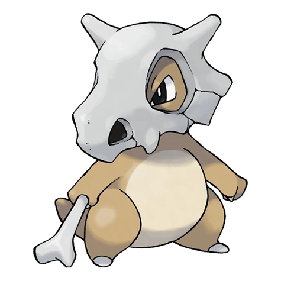

Назад
Кьюбон

Кьюбон — Покемон 1 поколения под номером 104 в Покедекс. Обитает он в регионе Канто и относится к Земляному типу. Кьюбон тоскует по матери, которую он больше никогда не увидит. Увидев подобие своей матери в полнолуние, он плачет. Постоянно текущие слёзы оставляют на черепе Покемона заметные пятна.
Тип:
Земляной
Эволюция
# 104 Кьюбон
=>
# 105 Маровак